地政学
アンドラ・ラ・ベリャはフランス大統領とウルジェイ司教を共同公とする国の首都です。EU外にありながらユーロを使い、スペイン、フランス、カタルーニャ語圏と日常的に交渉します。小国外交が谷で動く街です。今も。
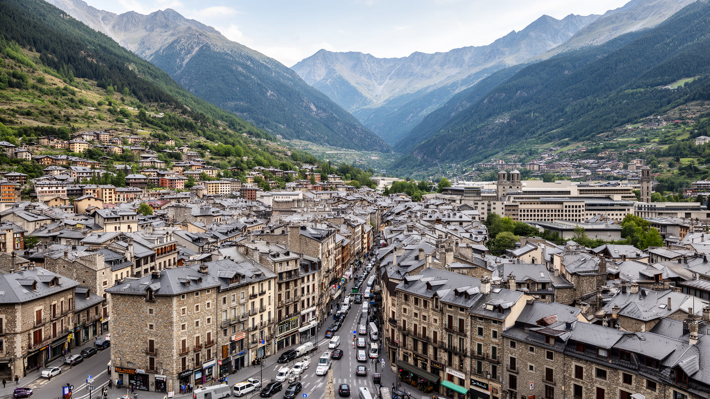
🇦🇩 アンドラ / ピレネー / World City Atlas
フランスとスペインの間、ピレネーの谷に置かれた小さな首都。共同公制度、カタルーニャ語文化、観光、小売、金融、雪山、住宅費、国境道路が、短い谷底の市街地に集まります。
都市の骨格
アンドラ・ラ・ベリャは、広い平野ではなく狭い谷に形成された首都です。官庁、旧市街、商業通り、バスターミナル、温泉都市エスカルデスとの連続、山腹住宅が近く、国境を越える買い物と観光が日常交通にも重なります。
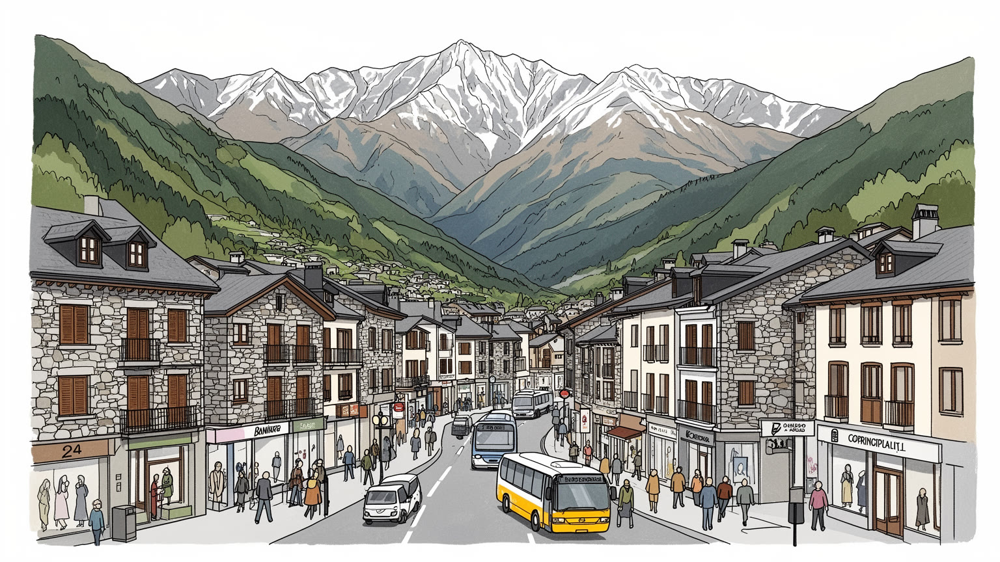
アンドラ・ラ・ベリャはフランス大統領とウルジェイ司教を共同公とする国の首都です。EU外にありながらユーロを使い、スペイン、フランス、カタルーニャ語圏と日常的に交渉します。小国外交が谷で動く街です。今も。
小売、観光、スキー、金融、行政、建設、ホテル、飲食が雇用を作る。免税イメージの背後では、店員、清掃、運転手、銀行員、公務員、季節労働者が、国境道路と山岳観光の変動に合わせ働く街です。都市の足元です。
公用語はカタルーニャ語で、教会、石造りの家、祭礼、山岳共同体の記憶が街を支える。スペイン語、フランス語、ポルトガル語も聞こえ、カトリックの暦と移住者の日常が首都の文化を広げます。街の暦も育ちます。
旅行者は旧市街、商業通り、温泉、スキー場へ向かうが、住民には住宅費、交通渋滞、駐車、保育、越境通勤、気候リスクが切実です。美しい山の首都は、土地の狭さと観光依存も抱えます。住む条件が強く問われます。
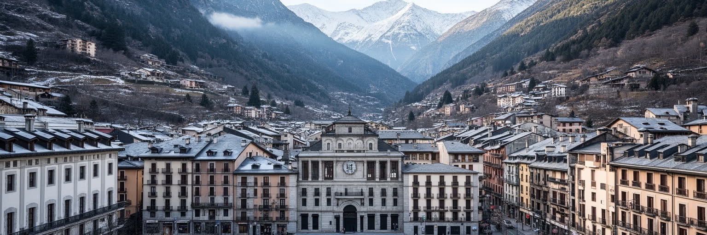
アンドラ・ラ・ベリャの政治的重要性は、人口規模ではなく制度の独自性から生まれる。アンドラはフランス大統領とスペイン側カタルーニャのウルジェイ司教を共同公とする国で、近代国家の議会、政府、裁判、地方自治を持ちながら、中世以来の保護関係を現代的に組み替えてきた。首都の官庁や議会は巨大ではないが、そこではEUとの関係、税制、金融監督、国境管理、観光、環境、住宅、言語政策が議論される。アンドラは欧州連合の加盟国ではない一方、ユーロを使い、スペインとフランスの道路、労働、教育、医療、商取引に深く依存する。だから首都の政策は常に外部との交渉を含む。小さな国では、政治家、公務員、商人、住民の距離が近く、合意形成は速く見える反面、利害関係も見えやすい。アンドラ・ラ・ベリャを読むには、山に囲まれた静かな小首都という印象だけでなく、二つの大国にはさまれた制度の柔軟さを見る必要がある。小国外交は大使館街の華やかさより、税制の透明化、金融の信頼、道路協定、気候政策、文化保護の細部に現れる。谷底の会議室で決まることが、国境を越えて毎日行き来する人、買い物客、スキー客、銀行、学校へ届く。共同公制度は象徴に見えても、国家の歴史的正統性と外部への説明力を支える。小さな首都の政治は、古い制度を現在の行政能力へ変換する作業でもある。
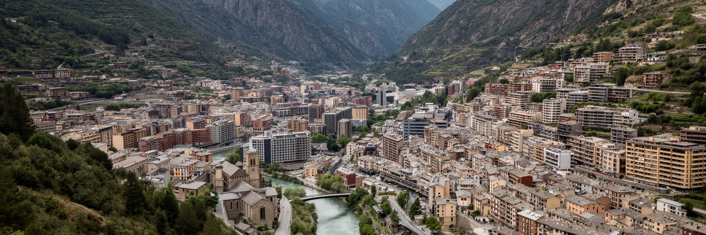
アンドラ・ラ・ベリャの都市形態は、ピレネーの地形を抜きに理解できない。市街地はバリラ川の谷底に沿って伸び、周囲の斜面には住宅、ホテル、道路、緑地が階段状に重なる。面積は小さく、平らな土地も限られるため、官庁、商業、住宅、学校、バス、駐車場、観光施設が近接する。隣のエスカルデス＝エンゴルダニとは市街地が連続し、旅行者には一つの中心都市のように見える。谷の都市は歩ける距離が短い一方、自動車の流れが集中しやすい。スペイン側とフランス側へ抜ける道路、買い物客、観光バス、通勤車、配送車が同じ谷底を使うため、渋滞と駐車は日常的な都市問題になる。山は美しい背景であり、同時に建設可能な土地を制限する境界でもある。斜面開発は眺望と住宅供給を生むが、雪、凍結、排水、土砂、救急アクセスへの配慮が欠かせない。アンドラ・ラ・ベリャを歩くと、石造りの旧市街、近代的な商業ビル、川沿いの道路、山腹の集合住宅が短い時間で現れる。これは都市が小さいから単純だという意味ではない。限られた谷の中で、首都機能、観光消費、住民生活、自然環境をどう配分するかが、街の形を決め続けている。川沿いのわずかな余白や歩道の幅も、住民にとっては通学、買い物、休憩の質を左右する。山の地形は、都市計画を常に具体的な妥協へ引き戻す。谷の狭さが、都市の優先順位を毎日見えるものにしている。
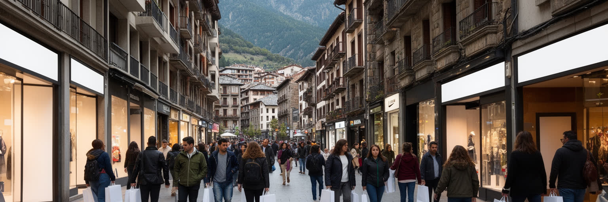
アンドラ・ラ・ベリャの中心部を歩くと、商店、ホテル、レストラン、スポーツ用品店、香水、電化製品、アウトドア用品が連続し、山岳首都であると同時に買い物の都市であることが分かる。低税率と国境立地は、長くアンドラの観光経済を支えてきた。スペインやフランスからの日帰り客、スキー客、温泉客、夏の登山客は、宿泊だけでなく小売と飲食に大きな需要を作る。免税の魅力は分かりやすいが、都市の実態は単純な安売りではない。店員、倉庫、配送、清掃、警備、会計、ホテル、レストラン、バス会社が観光の流れを支え、季節や為替、隣国の景気、燃料費、国境規制に左右される。買い物観光は税収と雇用を生む一方、中心部を消費の空間へ寄せ、住民向けの日用品店や静かな公共空間を圧迫することもある。大量の車が谷へ入れば、道路、駐車場、大気、歩行環境にも負担がかかる。アンドラ・ラ・ベリャの商業通りは、山国の生き残り戦略が見える場所である。だが都市の価値を価格差だけに置くと、他地域の税制変更やオンライン消費に弱くなる。街が長く魅力を保つには、買い物に加えて、歩ける中心部、食、文化、温泉、自然への敬意を組み合わせる必要がある。店の入れ替わりや営業時間、歩行者空間の管理は、観光客の満足だけでなく住民が中心部を自分の街として使えるかにも関わる。
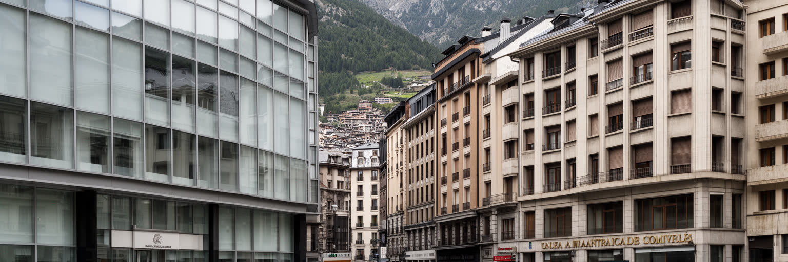
アンドラ経済を語る時、金融と税制の転換は避けられない。かつてのアンドラは低税率、銀行機密、国境商業のイメージで知られたが、欧州と国際社会の基準が厳しくなる中で、透明性、情報交換、金融監督、マネーロンダリング対策を強めてきた。アンドラ・ラ・ベリャには銀行、保険、専門職、会計、法律、行政機関が集まり、小国の信用を維持する仕事が行われる。金融は雇用と税収を支える重要産業だが、都市の規模に比べて銀行部門が大きいことは、監督と評判リスクを常に意識させる。観光や小売が目に見える経済なら、金融は目に見えにくい制度の経済である。国際基準に合わせることは、古い競争力を手放す痛みを伴う一方、長期的には企業、住民、投資家が信頼できる国であるための条件になる。首都の金融街を読むには、ガラスの建物や銀行看板ではなく、どのように税収を確保し、公共サービスへ回し、住宅や交通の負担に対応するかを見る必要がある。低税率だけに頼る都市は、社会的な合意を失いやすい。アンドラ・ラ・ベリャの課題は、国際的に透明な制度を持ちながら、小さな国らしい機動性を保ち、観光だけに偏らない高付加価値の仕事を作ることである。金融の信頼は、最終的には住民の生活基盤にも返ってこなければならない。規制対応を担う専門職や情報技術の仕事が増えれば、若い世代が観光以外の進路を描く余地も広がる。
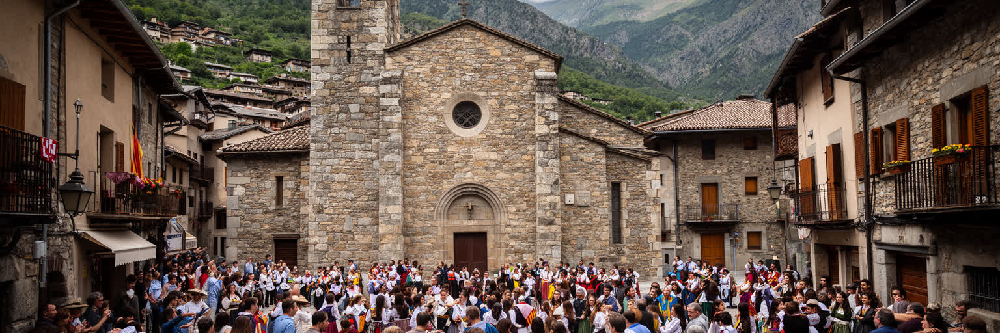
アンドラ・ラ・ベリャの文化の中心には、カタルーニャ語がある。アンドラはカタルーニャ語を唯一の公用語とする国で、学校、行政、議会、標識、メディア、文化政策を通じて、周囲の大言語に埋もれない公共空間を作っている。とはいえ街ではスペイン語、フランス語、ポルトガル語も広く聞こえ、観光と移住が多言語の日常を生む。石造りの教会、旧市街の家並み、山岳共同体の祭礼、カトリックの暦は、首都が単なる商業都市ではないことを示す。教会は信仰の場所であると同時に、家族行事、記憶、音楽、慈善、地域のつながりを支える施設でもある。小さな国では、言語政策が文化の飾りではなく、主権の実務になる。住民の国籍構成が多様で、外国生まれの労働者も多い社会では、カタルーニャ語を守ることと、新しく来た人が参加できることを両立させなければならない。アンドラ・ラ・ベリャを文化都市として読むには、商店街の多言語な接客だけでなく、学校でどの言葉が学ばれ、祭りで誰が参加し、教会や地域施設がどのように居場所を作るかを見る必要がある。小国の文化は、閉じた伝統ではなく、谷へ入ってくる人々をどう迎え、共通の公共性へ結び直すかで更新される。言葉を学ぶ機会、地域行事への参加、移住者の子どもの教育は、文化保護を排除ではなく共有へ変える実務になる。小さな首都の会話は、国の帰属を日々確かめる場でもある。
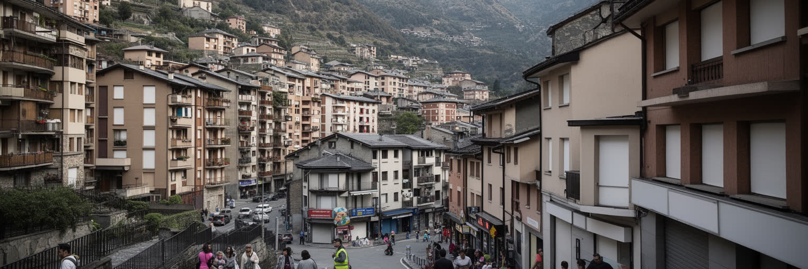
アンドラ・ラ・ベリャの生活を理解するには、所得水準の高さだけでなく住まいの圧力を見る必要がある。谷底の土地は限られ、観光、商業、金融、行政、短期滞在、移住希望者が住宅需要を押し上げる。近年は低税率や山岳環境を求める高所得層、リモートワーカー、隣国からの移住者も注目を集め、賃貸料や不動産価格への不安が強まっている。働く人が中心部に住みにくくなれば、通勤、交通渋滞、保育、地域参加の負担が増える。ホテルや店で働く人、公務員、若い家族、単身者、高齢者にとって、手ごろな住まいは観光収入と同じくらい重要な都市基盤である。小国では社会の距離が近く、仕事も知人も見つけやすい半面、住宅不足や所得差もすぐに可視化される。斜面に住宅を増やせば供給は広がるが、道路、雪、排水、景観、自然保護への影響を避けられない。アンドラ・ラ・ベリャの住まいの課題は、単なる市場問題ではなく、国がどのような人を受け入れ、観光産業を誰の労働で支え、若い世代にどんな将来を用意するかという政治の問題である。山の首都が住み続けられる都市であるためには、住宅政策、公共交通、賃貸の安定、地域サービスを一体で考える必要がある。景観の美しさは、働く人が暮らせて初めて都市の力になる。短期滞在者と定住者の需要を区別し、空き家や改修、公共住宅をどう扱うかも、谷の社会的な安定を左右する。
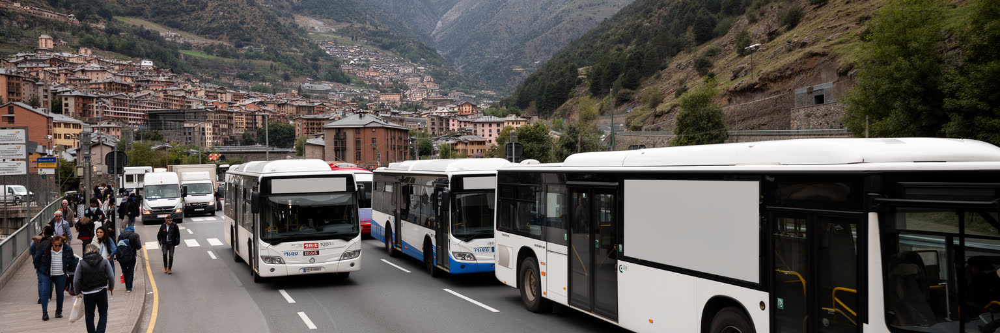
アンドラには空港も鉄道駅も国内にないため、アンドラ・ラ・ベリャの交通は道路に大きく依存する。スペイン側のカタルーニャ、フランス側のピレネーへ向かう谷道は、観光客、買い物客、通勤者、物流、バス、救急、行政の移動を一手に引き受ける。首都のバスターミナルは、バルセロナ、トゥールーズ、近隣都市、スキー場への実用的な玄関であり、車を持たない住民や旅行者にとって重要な公共インフラである。だが道路中心の都市は、混雑、駐車不足、排気、歩行者安全、冬の雪、国境の遅れに弱い。谷底では迂回路が少なく、一つの事故や悪天候が中心部の時間を止めることもある。観光経済にとって道路の便利さは生命線だが、車の流入を増やし続ければ、買い物の魅力を支える歩きやすさが失われる。アンドラ・ラ・ベリャの交通政策は、国境アクセスを確保しながら、住民が日々使えるバス、歩道、駐輪、駐車管理、配送時間の調整を整える課題である。小さな首都だからこそ、道路の設計は都市全体の公平性に直結する。観光客が短時間で便利に通過する街ではなく、住民が雨や雪の日にも安全に移動できる街でなければ、山岳首都の豊かさは持続しない。国境を越えるバスの時刻、冬季の除雪、歩道の日陰や凍結対策は、派手ではないが生活の信頼を作る。道路しかない国では、一つの停留所の質も国際接続の一部になる。
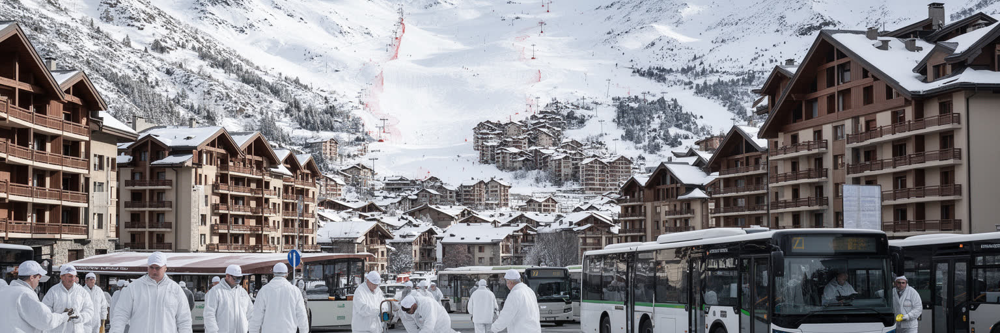
アンドラ・ラ・ベリャはスキー場そのものではないが、雪山観光の中心的な宿泊、買い物、交通、サービスの拠点である。冬になると、近郊のスキーエリアへ向かう旅行者がホテル、レストラン、レンタル店、バス、タクシー、商店街を動かす。夏には登山、サイクリング、ハイキング、温泉、買い物が需要を支え、山岳リゾートは季節を変えながら首都に人を呼び込む。観光は外貨と雇用をもたらすが、季節労働の不安定さも伴う。ホテル清掃、厨房、販売、レンタル、ガイド、交通、警備、除雪、設備管理の仕事は繁忙期に集中し、住まい、賃金、労働時間、言語、移民資格が課題になる。雪不足や暖冬はスキー経済を揺らし、気候変動は山岳国の観光戦略を根本から問い直す。人工降雪、水利用、エネルギー、交通排出をどう抑えるかは、都市の環境政策ともつながる。アンドラ・ラ・ベリャを観光都市として読む時、華やかなスキー広告だけではなく、早朝に出勤する従業員、季節で変わる家賃、雪道を走るバス、観光客が去った後の商店街を見る必要がある。山の魅力は自然から借りている資産であり、その維持には働く人の条件と環境の限界を同時に考える都市の知恵が求められる。冬だけに依存しない文化、会議、健康、夏山の滞在を育てることも、季節労働の波を和らげる道になる。働く人の住まいと移動を整えることが、観光品質そのものを支える。
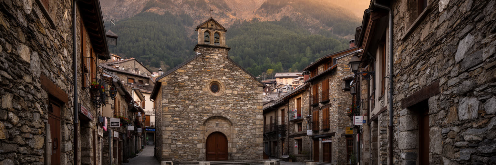
アンドラ・ラ・ベリャの旧市街は、商業ビルやホテルの連続とは別の時間を残す。石造りの家、細い路地、教会、広場、旧議会の記憶は、ピレネーの小共同体が国へ発展した過程を伝える。観光客は買い物通りから少し歩くだけで、山国の首都がもともとどのような尺度を持っていたかを感じられる。旧市街は写真の背景であるだけでなく、政治、信仰、家族、祭礼、自治の記憶を支える場所である。建物を保存することは、単に古い石を残すことではない。住民が歩き、店が続き、教会や公共施設が使われ、夜に静けさが戻ることが、都市の歴史を生かす条件になる。観光消費が強くなれば、旧市街は短時間の散策と飲食の場所へ寄り、住民の日常が薄くなる危険がある。一方で保存を厳しくしすぎれば、住宅改修、バリアフリー、防火、断熱、若い世帯の入居が難しくなる。アンドラ・ラ・ベリャの旧市街を読むには、石の美しさと現代生活の調整を同時に見る必要がある。小国の首都では、歴史的中心部が国家アイデンティティの舞台になりやすい。だからこそ、旧市街を観光商品の飾りに閉じ込めず、カタルーニャ語、自治、信仰、近所づきあいを感じられる生活の場所として保つことが重要になる。修復の素材、店舗の用途、夜間騒音、冬の滑りやすさまで、保存は細かな運用の積み重ねで成り立つ。小さな路地の手触りが、国の記憶を住民の生活へつなぐ。
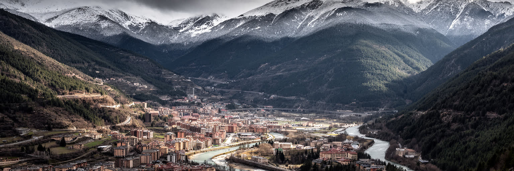
アンドラ・ラ・ベリャの気候リスクは、海面上昇ではなく山の水と雪に現れる。冬の降雪、春の融雪、夏の雷雨、谷の排水、森林火災リスク、暑さ、斜面の土砂は、都市の安全と観光経済を左右する。高山性の涼しさは大きな魅力だが、気候変動が進めば、スキーシーズンの短縮、水需要の増加、人工降雪への依存、山林の乾燥、豪雨時の流出が課題になる。首都の川や排水路は小さく見えても、谷底の道路、駐車場、商店、住宅を守る重要なインフラである。山腹開発が増えれば、土砂や水の動きも変わり、下流の市街地に負担がかかる。観光客にとって雪山は楽しみだが、住民にとっては除雪、凍結、暖房費、通勤、救急の問題でもある。アンドラ・ラ・ベリャの環境政策は、自然保護区だけの話ではなく、建築規制、公共交通、エネルギー、節水、廃棄物、観光人数の管理と結びつく。山岳国の首都は、自然の美しさを売るほど、その自然を傷めない制度を求められる。雪と水の変化を早く読めるかどうかは、観光収入だけでなく、谷に暮らす人の安全と将来の信頼を左右する。学校、ホテル、商店、行政が節水や廃棄物削減を日常化できれば、環境政策は観光の宣伝ではなく都市の作法になる。山を背景として眺めるだけでなく、流域として扱う感覚が首都には必要である。観測、避難情報、涼める公共空間の整備も、山岳都市の新しい基礎になる。
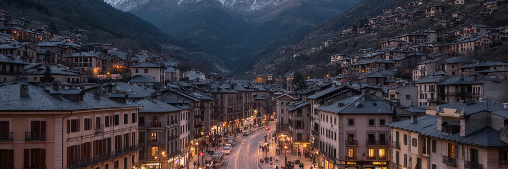
アンドラ・ラ・ベリャは、世界の大都市のように人口や高層ビルで存在感を示す首都ではない。むしろ、フランスとスペインの間にある小国が、国境、税制、言語、観光、金融、山岳環境をどう組み合わせて生きているかを見せる都市である。谷底の中心部には、官庁、旧市街、商業通り、銀行、ホテル、バスターミナル、住宅が近接し、隣のエスカルデスと連続して一つの生活圏を作る。旅行者は買い物、温泉、スキーを目的に訪れるが、都市の本質は、価格差の裏側にある制度、働く人、住宅費、道路、言語、信仰、雪と水の管理にある。アンドラはEU外にありながら欧州の制度と深く結びつき、ユーロを使い、国際的な金融透明性にも対応する。カタルーニャ語を公共の中心に置きながら、多言語の移住者と観光客を受け入れる。小さな首都を丁寧に見ると、欧州の境界は地図の線ではなく、毎日の通勤、買い物、税制、学校、道路、気候政策の中で作られていることが分かる。アンドラ・ラ・ベリャの価値は、山の美しさだけではなく、狭い谷で外部世界と住民生活を調整する力にある。小ささは弱点であると同時に、都市の選択がすぐ街路に現れる透明さでもある。観光客が短時間で通る場所、銀行員が働く場所、子どもが学校へ行く道、古い教会の広場が近いからこそ、経済政策は生活の感覚から切り離せない。そこにこの首都の読み応えがある。